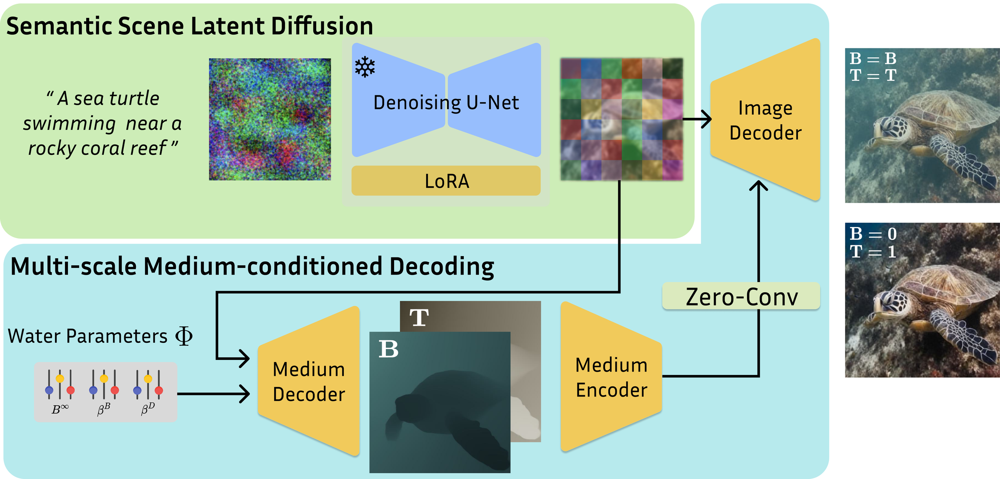
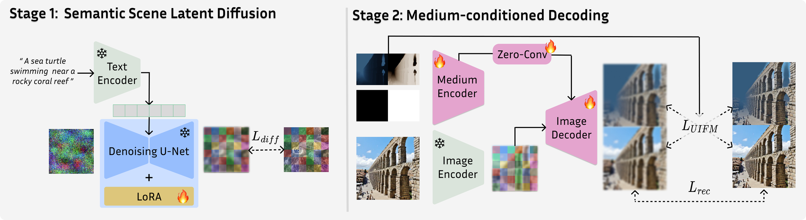

Proposed Method
Key idea. WaterGen separates underwater generation into two complementary parts: a diffusion model handles diverse scene generation, while a physically grounded decoder handles accurate local water-medium effects. This keeps object layout, scene geometry, and prompt alignment in the generative latent space, and moves attenuation, scattering, and background-light control to the stage where pixel-level radiometric accuracy matters most.

At inference time, WaterGen generates a clean semantic latent from a text prompt, then decodes it with explicit water-medium parameters. The same latent can be decoded repeatedly under different physical water conditions.

Training is isolated into two stages: clean-target diffusion fine-tuning for underwater scene semantics, followed by medium-conditioned decoder training with physically synthesized degradation.